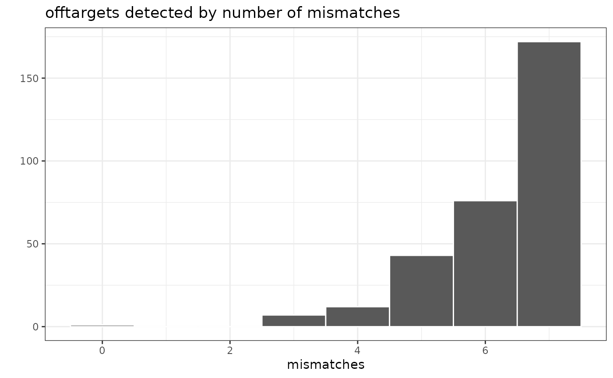

plot_mismatch_freq Plot the frequency of mismatches per offtarget.
plot_mismatch_freq.Rdplot_mismatch_freq Plot the frequency of mismatches per offtarget.
Examples
if (FALSE) { # \dontrun{
offtargets <- breakinspectoR(
target =system.file("extdata/vegfa.chr6.bed.gz", package="breakinspectoR"),
nontarget=system.file("extdata/nontarget.chr6.bed.gz", package="breakinspectoR"),
guide ="GACCCCCTCCACCCCGCCTC",
PAM =c("NGG", "NAG"),
bsgenome ="BSgenome.Hsapiens.UCSC.hg38",
cutsiteFromPAM=3
)
} # }
data(breakinspectoR_examples)
plot_mismatch_freq(offtargets)
#> Warning: `aes_string()` was deprecated in ggplot2 3.0.0.
#> ℹ Please use tidy evaluation idioms with `aes()`.
#> ℹ See also `vignette("ggplot2-in-packages")` for more information.
#> ℹ The deprecated feature was likely used in the breakinspectoR package.
#> Please report the issue to the authors.
